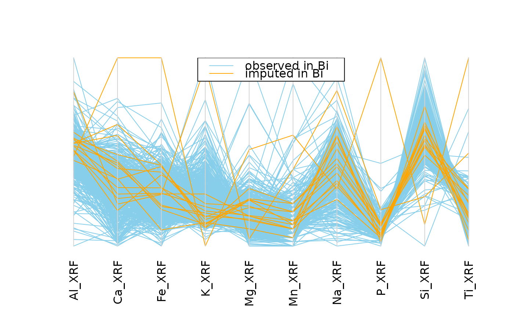

Parallel coordinate plot with information about missing/imputed values
Source:R/parcoordMiss.R
parcoordMiss.RdParallel coordinate plot with adjustments for missing/imputed values. Missing values in the plotted variables may be represented by a point above the corresponding coordinate axis to prevent disconnected lines. In addition, observations with missing/imputed values in selected variables may be highlighted.
parcoordMiss( x, delimiter = NULL, highlight = NULL, selection = c("any", "all"), plotvars = NULL, plotNA = TRUE, col = c("skyblue", "red", "skyblue4", "red4", "orange", "orange4"), alpha = NULL, lty = par("lty"), xlim = NULL, ylim = NULL, main = NULL, sub = NULL, xlab = NULL, ylab = NULL, labels = TRUE, xpd = NULL, interactive = TRUE, ... ) # S3 method for data.frame parcoordMiss( x, delimiter = NULL, highlight = NULL, selection = c("any", "all"), plotvars = NULL, plotNA = TRUE, col = c("skyblue", "red", "skyblue4", "red4", "orange", "orange4"), alpha = NULL, lty = par("lty"), xlim = NULL, ylim = NULL, main = NULL, sub = NULL, xlab = NULL, ylab = NULL, labels = TRUE, xpd = NULL, interactive = TRUE, ... ) # S3 method for survey.design parcoordMiss( x, delimiter = NULL, highlight = NULL, selection = c("any", "all"), plotvars = NULL, plotNA = TRUE, col = c("skyblue", "red", "skyblue4", "red4", "orange", "orange4"), alpha = NULL, lty = par("lty"), xlim = NULL, ylim = NULL, main = NULL, sub = NULL, xlab = NULL, ylab = NULL, labels = TRUE, xpd = NULL, interactive = TRUE, ... ) # S3 method for default parcoordMiss( x, delimiter = NULL, highlight = NULL, selection = c("any", "all"), plotvars = NULL, plotNA = TRUE, col = c("skyblue", "red", "skyblue4", "red4", "orange", "orange4"), alpha = NULL, lty = par("lty"), xlim = NULL, ylim = NULL, main = NULL, sub = NULL, xlab = NULL, ylab = NULL, labels = TRUE, xpd = NULL, interactive = TRUE, ... )
Arguments
| x | a matrix or |
|---|---|
| delimiter | a character-vector to distinguish between variables and
imputation-indices for imputed variables (therefore, |
| highlight | a vector giving the variables to be used for highlighting.
If |
| selection | the selection method for highlighting missing/imputed
values in multiple highlight variables. Possible values are |
| plotvars | a vector giving the variables to be plotted. If |
| plotNA | a logical indicating whether missing values in the plot variables should be represented by a point above the corresponding coordinate axis to prevent disconnected lines. |
| col | if |
| alpha | a numeric value between 0 and 1 giving the level of
transparency of the colors, or |
| lty | if |
| xlim, ylim | axis limits. |
| main, sub | main and sub title. |
| xlab, ylab | axis labels. |
| labels | either a logical indicating whether labels should be plotted below each coordinate axis, or a character vector giving the labels. |
| xpd | a logical indicating whether the lines should be allowed to go
outside the plot region. If |
| interactive | a logical indicating whether interactive features should be enabled (see ‘Details’). |
| ... | for |
Details
In parallel coordinate plots, the variables are represented by parallel
axes. Each observation of the scaled data is shown as a line. Observations
with missing/imputed values in selected variables may thereby be
highlighted. However, plotting variables with missing values results in
disconnected lines, making it impossible to trace the respective
observations across the graph. As a remedy, missing values may be
represented by a point above the corresponding coordinate axis, which is
separated from the main plot by a small gap and a horizontal line, as
determined by plotNA. Connected lines can then be drawn for all
observations. Nevertheless, a caveat of this display is that it may draw
attention away from the main relationships between the variables.
If interactive is TRUE, it is possible switch between this
display and the standard display without the separate level for missing
values by clicking in the top margin of the plot. In addition, the variables
to be used for highlighting can be selected interactively. Observations
with missing/imputed values in any or in all of the selected variables are
highlighted (as determined by selection). A variable can be added to
the selection by clicking on a coordinate axis. If a variable is already
selected, clicking on its coordinate axis removes it from the selection.
Clicking anywhere outside the plot region (except the top margin, if
missing/imputed values exist) quits the interactive session.
Note
Some of the argument names and positions have changed with versions
1.3 and 1.4 due to extended functionality and for more consistency with
other plot functions in VIM. For back compatibility, the arguments
colcomb and xaxlabels can still be supplied to ...{}
and are handled correctly. Nevertheless, they are deprecated and no longer
documented. Use highlight and labels instead.
References
Wegman, E. J. (1990) Hyperdimensional data analysis using parallel coordinates. Journal of the American Statistical Association 85 (411), 664--675.
M. Templ, A. Alfons, P. Filzmoser (2012) Exploring incomplete data using visualization tools. Journal of Advances in Data Analysis and Classification, Online first. DOI: 10.1007/s11634-011-0102-y.
See also
Examples
data(chorizonDL, package = "VIM") ## for missing values parcoordMiss(chorizonDL[,c(15,101:110)], plotvars=2:11, interactive = FALSE)legend("top", col = c("skyblue", "red"), lwd = c(1,1), legend = c("observed in Bi", "missing in Bi"))## for imputed values parcoordMiss(kNN(chorizonDL[,c(15,101:110)]), delimiter = "_imp" , plotvars=2:11, interactive = FALSE)legend("top", col = c("skyblue", "orange"), lwd = c(1,1), legend = c("observed in Bi", "imputed in Bi"))